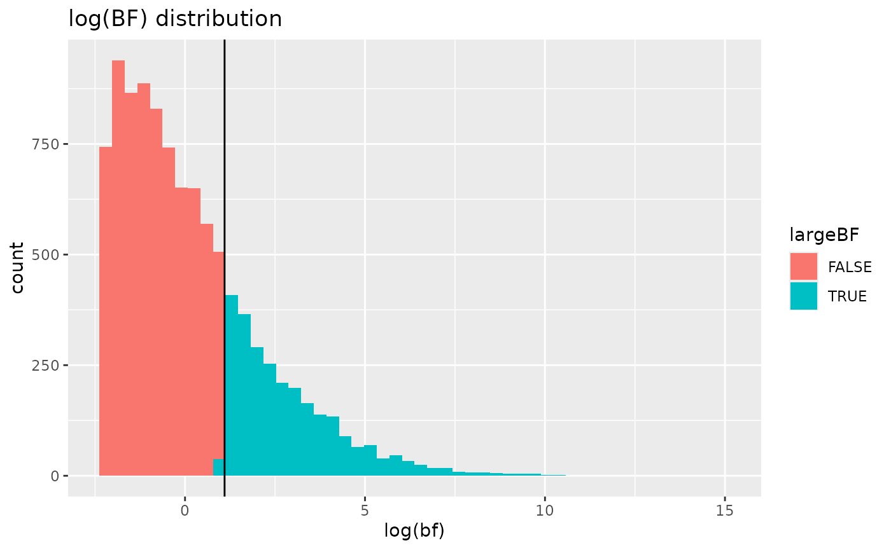

Logical Vectors, Bayesian power analyses, and ROPEs
Phil Chalmers
February 13, 2026
Source:vignettes/SpowerIntro_logicals.Rmd
SpowerIntro_logicals.RmdLogical returns
In many applications it can be advantageous to directly return
logical values in the simulation experiment rather than
letting Spower() perform these threshold transformations
internally (e.g., using sig.level) as these can include
more intricate experimental requirements. The following showcases
various ways that returning logical values works in the
Spower package, where the average across the collected
TRUE/FALSE values reflects the target power
estimate.
Note that returning a logical in the simulation
experiment necessarily implies that the sig.level argument
in Spower() and friends will not be used, and therefore
suitable alternatives must be defined within the context of the
simulation experiment code (e.g., including conf.level or
sig.level in the simulation experiment function
directly).
Confidence (and credible) intervals
Keeping with the basic -test experiment in the introduction vignette, suppose we’re interested in the power to reject the null hypothesis in a one-sample -test, where is the probability of the observing the data given the null hypothesis. Normally, one could simply write an experiment that returns a -value in this context, such as the following,
However, an equivalent way to explore power in this context would be to investigate the same null hypothesis via confidence intervals given a specific level to define their range, where .
If one were to take this approach, the defined simulation function
should return a logical value based on the relation of the
parameter estimate to the CI, where the CI is used to evaluate the
plausibility of
.
Specifically, in the context of using CI’s to reflect
-value
logic, the CI is used to evaluate whether
falls outside the advertised interval, returning
TRUE if outside the CI and FALSE if within the
interval. Alternatively, if one were in a Bayesian analysis context, a
credible interval could be used instead of the confidence
interval to construct the same logical output.
The following code demonstrates this logic, assuming that
(and therefore a two-tailed, 95% CI is used), and uses the
is.outside_CI() function to evaluate whether the
parameter falls outside the estimated CI returned from
t.test().
l_single.t <- function(n, mean, mu=0, conf.level=.95){
g <- rnorm(n, mean=mean)
out <- t.test(g, mu=mu, conf.level=conf.level)
CI <- out$conf.int
is.outside_CI(mu, CI) # equivalent to: !(CI[1] < mu && mu < CI[2])
}
l_single.t(100, mean=.2)## [1] TRUEEvaluating the power analysis with Spower() works out of
the box now, noting again that l_single.t() will ignore the
Spower(..., sig.level) information altogether as it is no
longer relevant when logical information is returned. The
following compares both the
-value
and logical CI approaches, both of which provide identical inferential
information in this case (this will not always be true; the
-test
simply reflects a special case).
p_single.t(n=100, mean=.3) |> Spower()##
## Execution time (H:M:S): 00:00:03
## Design conditions:
##
## # A tibble: 1 × 4
## n mean sig.level power
## <dbl> <dbl> <dbl> <lgl>
## 1 100 0.3 0.05 NA
##
## Estimate of power: 0.846
## 95% Confidence Interval: [0.839, 0.853]
l_single.t(n=100, mean=.3) |> Spower()##
## Execution time (H:M:S): 00:00:04
## Design conditions:
##
## # A tibble: 1 × 4
## n mean sig.level power
## <dbl> <dbl> <dbl> <lgl>
## 1 100 0.3 0.05 NA
##
## Estimate of power: 0.841
## 95% Confidence Interval: [0.834, 0.849]Using previouls defined simulation code
Note that even in the CI context presented above, writing
user-defined functions may not be entirely necessary. This is because
the related, internally defined function p_t.test() can be
used to obtain the same CI information by returning the model itself,
and subsequently extracting the $conf.int element. The
benefit of this, as shown below, is that users do not need to reinvent
the data generation and analysis portions of the experiment if this is
already available in the package.
l_single.t <- function(n, mean, mu=0, conf.level=.95){
# return analysis output from t.test() for further extraction
out <- p_t.test(n=n, d=mean, mu=mu, type='one.sample',
conf.level=conf.level, return_analysis=TRUE)
CI <- out$conf.int
is.outside_CI(mu, CI)
}
l_single.t(100, mean=.2)## [1] FALSEPrecision criterion
Using confidence or credible intervals are also useful in contexts where specific precision criteria are important to satisfy. Suppose that, in addition to detecting a particular effect of interest in a given sample, the results are only deemed “practically useful” if the resulting effect size inferences are sufficiently precise, where precision could be based on the magnitude of the SE, the width of the uncertainty interval, or other relevant precision-based criterion. In this case, one may join the logic of the -value/CI approaches to create a joint evaluation for power, where a result is deemed both “significant and useful” if the null hypothesis is significantly rejected and the CI is sufficiently narrow.
As a working example, suppose that the above one-sample -test experiment was generalized such that a meaningfully significant result would require a) the rejection of the null, , and b) a CI width less than 1/4 standardized mean units. What value of would be required to obtain such a significant and sufficiently accurate inference to obtain a power of 80% given, say, the “small” effect size of ?
l_precision <- function(n, mean, CI.width, mu=0, alpha=.05){
g <- rnorm(n, mean=mean)
out <- t.test(g, mu=mu)
CI <- out$conf.int
width <- CI[2] - CI[1]
# return TRUE if significant and CI is sufficiently narrow
out$p.value < alpha && width < CI.width
}
l_precision(n=interval(10, 500), mean=.2, CI.width=1/4) |>
Spower(power=.80)
# equivalently:
# l_precision(n=NA, mean=.2, CI.width=1/4) |>
# Spower(power=.80, interval=c(10, 500))##
## Execution time (H:M:S): 00:00:22
## Design conditions:
##
## # A tibble: 1 × 4
## n mean sig.level power
## <dbl> <dbl> <dbl> <dbl>
## 1 NA 0.2 0.05 0.8
##
## Estimate of n: 272.6
## 95% Predicted Confidence Interval: [272.0, 273.2]Compared to the required
from a power analysis that just contains a significant result, this
joint practical significance criteria requires a meaningfully higher
sample size. Note that in the special case where
CI.width=Inf then all CI widths will be accepted, which
will result in the same power output that would have been obtained using
p_single.t().
##
## Execution time (H:M:S): 00:00:20
## Design conditions:
##
## # A tibble: 1 × 5
## n mean CI.width sig.level power
## <dbl> <dbl> <dbl> <dbl> <dbl>
## 1 NA 0.2 Inf 0.05 0.8
##
## Estimate of n: 198.8
## 95% Predicted Confidence Interval: [197.2, 200.2]Bayes Factors
If one were using a Bayesian analysis criteria rather than the
-value
approach, the Bayes factor
()
ratio could be used in the logical return context too. For
example, returning whether the observed
in a given random sample would indicate at least “moderate” supporting
evidence for the hypothesis of interest compared to some competing
hypothesis (often the complementary null,
,
though not necessarily), and the average across the independent samples
would indicate the degree of power when using this Bayes factor
cut-off.
The downside of focusing on BFs is that they require the computation
of the marginal likelihoods, typically via bridge sampling (e.g., via
the bridgesampling package), in addition to fitting the
model using Markov chain Monte Carlo (MCMC) methods (e.g.,
brms, rstan, rstanarm). Though
not a strict limitation per se, it is often more natural to focus
directly on the sample from posterior distribution for power analysis
applications rather than on the marginal Bayes factors; this is
demonstrated in the next section. Nevertheless, such applications are
possible with Spower if there is sufficient interest in
doing so.
As a simple example, the following one-sample
-test,
initially defined above, could be redefined to focus on output from the
BayesFactor package, which returns the
criteria in log units (hence, exp() is used to return the
ratio to its original metric) assuming a non-informative Jeffreys prior
for
.
In this case a TRUE is returned if the Bayes factor is
greater than 3 and FALSE if less than or equal to 3.
Finally, to ensure that nothing important is lost in the simulation
experiment code a data.frame() object is returned instead
of just the logical information, while
Spower() is informed to only focus on the
logical information for the purpose of the power
computations.
l_single.Bayes.t_BF <- function(n, mean, mu=0, bf.cut=3){
g <- rnorm(n, mean=mean)
res <- BayesFactor::ttestBF(g, mu=mu)
bf <- exp(as.numeric(res@bayesFactor[1])) # Bayes factor
data.frame(largeBF=bf > bf.cut, bf=bf)
}Evaluating this simulation with , , and gives the following power estimate.
l_single.Bayes.t_BF(n=100, mean=.5, mu=.3) |> Spower(select='largeBF') -> BFsim
BFsim##
## Execution time (H:M:S): 00:01:24
## Design conditions:
##
## # A tibble: 1 × 5
## n mean mu sig.level power
## <dbl> <dbl> <dbl> <dbl> <lgl>
## 1 100 0.5 0.3 0.05 NA
##
## Estimate of power: 0.265
## 95% Confidence Interval: [0.257, 0.274]To view the complete simulation results use SimResults()
on the resulting output, which if useful could be further plotted. Note
that when plotting Bayes factors it is advantageous to present the plot
in natural log units.
BFresults <- SimResults(BFsim)
BFresults## # A tibble: 10,000 × 6
## n mean mu sig.level largeBF bf
## <dbl> <dbl> <dbl> <dbl> <lgl> <dbl>
## 1 100 0.5 0.3 0.05 FALSE 0.131
## 2 100 0.5 0.3 0.05 FALSE 1.04
## 3 100 0.5 0.3 0.05 FALSE 2.73
## 4 100 0.5 0.3 0.05 TRUE 43.4
## 5 100 0.5 0.3 0.05 FALSE 0.168
## 6 100 0.5 0.3 0.05 FALSE 1.06
## 7 100 0.5 0.3 0.05 TRUE 3.73
## 8 100 0.5 0.3 0.05 TRUE 442.
## 9 100 0.5 0.3 0.05 TRUE 11.3
## 10 100 0.5 0.3 0.05 TRUE 4.11
## # ℹ 9,990 more rows
# use log-scale for Bayes factors as this is a more useful metric
library(ggplot2)
ggplot(BFresults, aes(log(bf), fill=largeBF)) +
geom_histogram(bins=50) + geom_vline(xintercept=log(3)) +
ggtitle('log(BF) distribution')
Bayesian power analysis via posterior probabiltes
The canonical way that Spower has been designed focuses
primarily on
-values
involving the null hypothesis to be tested
().
The reason for setting the package up this way is so that the parameter
(sig.level) can be used as the “line-in-the-sand” threshold
to flag whether a null hypothesis was rejected in each sample of data as
this behaviour is common among popular power analysis software. Bayesian
power analysis, on the other hand, are also supported by the package,
where instead the posterior probability of the alternative hypothesis,
,
is the focus of the simulation experiment.
Continuing with the simple one-sample
-test
example in the introduction vignette and above, were the power analysis
context be that of a Bayesian analysis the conditional probability of
the alternative,
,
may be used instead. For this to work with Spower though, the
argument sig.direction = 'above' should be supplied, where
now the sig.level indicates that “significance” only occurs
when an probability observation is above the define
sig.level cutoff (hence, the default of .05 is
no longer reasonable and should be modified).
Below is one such Bayesian approach using posterior probabilities
using the BayesFactor package, which is obtained by
translating the Bayes factor output into a suitable posterior
probability and focusing on the alternative hypothesis (hence, the
posterior probability returned corresponds to
).
The following also assumes that the competing hypotheses are equally
likely when obtaining the posterior probability (hence, prior odds are
1:1, reflected in the argument prior_odds).
# assuming P(H1)/P(H0) are equally likely; hence, prior_odds = 1
pp_single.Bayes.t <- function(n, mean, mu, prior_odds = 1){
g <- rnorm(n, mean=mean)
res <- BayesFactor::ttestBF(g, mu=mu)
bf <- exp(as.numeric(res@bayesFactor[1])) # Bayes factor
posterior_odds <- bf * prior_odds
posterior <- posterior_odds / (posterior_odds + 1)
posterior # P(H_1|D)
}For the Bayesian
-test
definition in the next code chunk evaluation, “significance” is obtained
whenever the sample posterior is greater than
sig.level = .90, demonstrating strong support of
.
Note that this is a more strict criteria than the null hypothesis
criteria presented in the introduction vignette, and therefore has
notably lower power.
# power cut-off for a significantly supportive posterior is > 0.90
pp_single.Bayes.t(n=100, mean=.5, mu=.3) |>
Spower(sig.level = .90, sig.direction = 'above')##
## Execution time (H:M:S): 00:01:23
## Design conditions:
##
## # A tibble: 1 × 5
## n mean mu sig.level power
## <dbl> <dbl> <dbl> <dbl> <lgl>
## 1 100 0.5 0.3 0.9 NA
##
## Estimate of power: 0.150
## 95% Confidence Interval: [0.143, 0.157]With this approach all of the power analysis criteria described in
help(Spower) are still possible, where for instance solving
other experimental components (such as the sample size n)
are easy to setup by providing suitable NA argument flags
and search intervals in Spower().
Regions of practical equivalence (ROPEs)
This section presents two related concepts for estimating the power where some justifiable equivalence interval is of interest.
Equivalence testing
As an alternative approach to the rejection of the null hypothesis via the -value or CI approaches, there may be interest in evaluating power in the context of establishing equivalence, or in directional cases superiority or non-inferiority. The purpose of an equivalence tests is to establish that, although true differences may exist between groups, the differences are small enough to be considered “practically equivalent” in all subsequent applications.
As a running example, suppose that in an independent samples -test the two groups might be considered “equivalent” if the true mean difference in the population is somewhere above but below , where the s are used to define the equivalence interval. If, for instance, two groups are to be deemed statistically equivalent given these boundary locations then, using a two-one sided hypothesis testing approach (TOST), the two null hypotheses must be evaluated are and Rejecting both of these null hypotheses leads to the induced complementary hypothesis of interest or in words, the population mean difference falls within the defined region of equivalence. Superiority testing and non-inferiority testing follow the same type of logic, however rather than defining a region of equivalence only one tail of the equivalence interval is of interest.
To put numbers to the above expression, suppose that the true mean
difference between the groups was
(labeled delta), and each group had an
(labeled sds). Furthermore, suppose any true
difference that fell within the equivalence interval
(labeled equiv) would be deemed practically equivalent a
priori. The power to jointly reject the above null hypotheses, and
therefore conclude the groups are practically equivalence
(),
is evaluated in the following output for an experiment with
observations
(
for each group).
l_equiv.t <- function(n, delta, equiv, sds = c(1,1),
sig.level = .025){
g1 <- rnorm(n, mean=0, sd=sds[1])
g2 <- rnorm(n, mean=delta, sd=sds[2])
outL <- t.test(g2, g1, mu=-equiv[1], alternative = "less")$p.value
outU <- t.test(g2, g1, mu=equiv[2], alternative = "less")$p.value
outL < sig.level && outU < sig.level
}##
## Execution time (H:M:S): 00:00:06
## Design conditions:
##
## # A tibble: 1 × 4
## n delta sig.level power
## <dbl> <dbl> <dbl> <lgl>
## 1 50 1 0.05 NA
##
## Estimate of power: 0.844
## 95% Confidence Interval: [0.837, 0.851]In this case, the power to conclude that the two groups are
equivalent, expressed as a percentage, is 84%. You can verify that these
computations are correct by comparing to established software for now,
such as via the TOSTER package.
TOSTER::power_t_TOST(n = 50,
delta = 1,
sd = 2.5,
eqb = 2.5,
alpha = .025,
power = NULL,
type = "two.sample") Two-sample TOST power calculation
power = 0.8438747
beta = 0.1561253
alpha = 0.025
n = 50
delta = 1
sd = 2.5
bounds = -2.5, 2.5
NOTE: n is number in *each* groupAgain, the same type of logic can be evaluated using CIs
alone, and with the built-in p_t.test() function, where in
this case TRUE is returned if the estimated 90%
CI falls within the defined equivalence interval.
l_equiv.t_CI <- function(n, delta, equiv,
sds = c(1,1), conf.level = .95){
out <- p_t.test(n, delta, sds=sds, conf.level=conf.level,
return_analysis=TRUE)
is.CI_within(out$conf.int, interval=equiv) # returns TRUE if CI is within equiv interval
}
# an equivalent power analysis for "equivalence tests" via CI evaluations
l_equiv.t_CI(50, delta=1, equiv=c(-2.5, 2.5),
sds=c(2.5, 2.5)) |> Spower()##
## Execution time (H:M:S): 00:00:05
## Design conditions:
##
## # A tibble: 1 × 4
## n delta sig.level power
## <dbl> <dbl> <dbl> <lgl>
## 1 50 1 0.05 NA
##
## Estimate of power: 0.851
## 95% Confidence Interval: [0.844, 0.858]Bayesian approach to ROPEs (HDI + ROPE)
Finally, though not exhaustively, one could approach the topic of
practical equivalence using Bayesian methods using draws from the
posterior distribution of interest, such as those available from BUGS or
HMC samplers (e.g., stan). This approach is highly similar
to the equivalence testing approach described above, but uses highest
density interval + ROPE in Bayesian modeling instead. Below is one such
example that constructs a simple linear regression model with a binary
term that is analysed with rstanarm::stan_glm().
library(bayestestR)
library(rstanarm)
rope.lm <- function(n, beta0, beta1, range, sigma=1, ...){
# generate data
x <- matrix(rep(0:1, each=n))
y <- beta0 + beta1 * x + rnorm(nrow(x), sd=sigma)
dat <- data.frame(y, x)
# run model, but tell stan_glm() to use its indoor voice
model <- quiet(rstanarm::stan_glm(y ~ x, data = dat))
rope <- bayestestR::rope(model, ci=1, range=range, parameters="x")
as.numeric(rope)
}In the above example, the proportion of the sampled posterior
distribution that falls within the ROPE is returned, which works well
with the sig.level argument coupled with
sig.direction = 'above') in Spower() to define
a suitable accept/reject cut-off. Specifically, if
sig.level = .95 and sig.direction = 'above')
then the ROPE will only be accepted when the percentage of the posterior
distribution that falls within the defined ROPE is greater than .95.
This can of course be performed manually, returning a TRUE
when satisfied and FALSE otherwise, however in this case it
is not necessary.
Below reports a power estimate given
,
where the ROPE criteria is deemed satisfied/significant if 95% of the
posterior distribution for the
falls within the defined range of
.
Due to the slower execution speeds of the simulations the power
evaluations are computed using parallel=TRUE to utilize all
available cores.
rope.lm(n=50, beta0=2, beta1=1, sigma=1/2, range=c(.8, 1.2)) |>
Spower(sig.level=.95, sig.direction='above', parallel=TRUE)##
## Execution time (H:M:S): 00:04:03
## Design conditions:
##
## # A tibble: 1 × 5
## n beta0 beta1 sig.level power
## <dbl> <dbl> <dbl> <dbl> <lgl>
## 1 50 2 1 0.95 NA
##
## Estimate of power: 0.144
## 95% Confidence Interval: [0.138, 0.151]Finally, to demonstrate why this might be useful, the following estimates the required sample size to achieve 80% power when using a 95% HDI-ROPE criteria.
rope.lm(n=interval(50, 200), beta0=2, beta1=1, sigma=1/2, range=c(.8, 1.2)) |>
Spower(power=.80, sig.level=.95, sig.direction='above', parallel=TRUE)##
## Execution time (H:M:S): 00:14:53
## Design conditions:
##
## # A tibble: 1 × 5
## n beta0 beta1 sig.level power
## <dbl> <dbl> <dbl> <dbl> <dbl>
## 1 NA 2 1 0.95 0.8
##
## Estimate of n: 107.7
## 95% Predicted Confidence Interval: [106.7, 108.7]